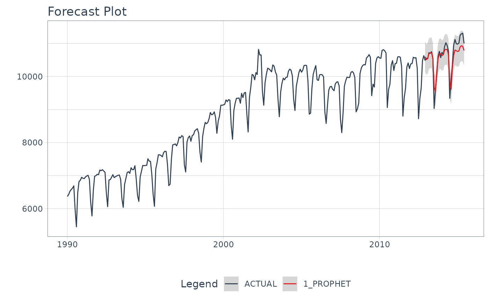

This is a wrapper for timetk::plot_time_series() that generates an interactive (plotly) or static
(ggplot2) plot with the forecasted data.
Usage
plot_modeltime_forecast(
.data,
.conf_interval_show = TRUE,
.conf_interval_fill = "grey20",
.conf_interval_alpha = 0.2,
.smooth = FALSE,
.legend_show = TRUE,
.legend_max_width = 40,
.facet_ncol = 1,
.facet_nrow = 1,
.facet_scales = "free_y",
.title = "Forecast Plot",
.x_lab = "",
.y_lab = "",
.color_lab = "Legend",
.interactive = TRUE,
.plotly_slider = FALSE,
.trelliscope = FALSE,
.trelliscope_params = list(),
...
)Arguments
- .data
A
tibblethat is the output ofmodeltime_forecast()- .conf_interval_show
Logical. Whether or not to include the confidence interval as a ribbon.
- .conf_interval_fill
Fill color for the confidence interval
- .conf_interval_alpha
Fill opacity for the confidence interval. Range (0, 1).
- .smooth
Logical - Whether or not to include a trendline smoother. Uses See
smooth_vec()to apply a LOESS smoother.- .legend_show
Logical. Whether or not to show the legend. Can save space with long model descriptions.
- .legend_max_width
Numeric. The width of truncation to apply to the legend text.
- .facet_ncol
Number of facet columns.
- .facet_nrow
Number of facet rows (only used for
.trelliscope = TRUE)- .facet_scales
Control facet x & y-axis ranges. Options include "fixed", "free", "free_y", "free_x"
- .title
Title for the plot
- .x_lab
X-axis label for the plot
- .y_lab
Y-axis label for the plot
- .color_lab
Legend label if a
color_varis used.- .interactive
Returns either a static (
ggplot2) visualization or an interactive (plotly) visualization- .plotly_slider
If
TRUE, returns a plotly date range slider.- .trelliscope
Returns either a normal plot or a trelliscopejs plot (great for many time series) Must have
trelliscopejsinstalled.- .trelliscope_params
Pass parameters to the
trelliscopejs::facet_trelliscope()function as alist(). The only parameters that cannot be passed are:ncol: use.facet_ncolnrow: use.facet_nrowscales: usefacet_scalesas_plotly: use.interactive
- ...
Additional arguments passed to
timetk::plot_time_series().
Examples
library(dplyr)
library(lubridate)
library(timetk)
library(parsnip)
library(rsample)
# Data
m750 <- m4_monthly %>% filter(id == "M750")
# Split Data 80/20
splits <- initial_time_split(m750, prop = 0.9)
# --- MODELS ---
# Model 1: prophet ----
model_fit_prophet <- prophet_reg() %>%
set_engine(engine = "prophet") %>%
fit(value ~ date, data = training(splits))
#> Disabling weekly seasonality. Run prophet with weekly.seasonality=TRUE to override this.
#> Disabling daily seasonality. Run prophet with daily.seasonality=TRUE to override this.
# ---- MODELTIME TABLE ----
models_tbl <- modeltime_table(
model_fit_prophet
)
# ---- FORECAST ----
models_tbl %>%
modeltime_calibrate(new_data = testing(splits)) %>%
modeltime_forecast(
new_data = testing(splits),
actual_data = m750
) %>%
plot_modeltime_forecast(.interactive = FALSE)
#> Warning: no non-missing arguments to max; returning -Inf
